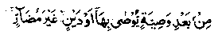
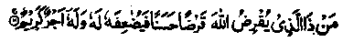
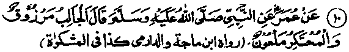

Chapter Two · Section (b): Ahadith regarding the evils of miserliness
3. Concession for heirs while making a will
Another Hadith relates the same story (as given in the above Hadith) under a different heading. Rasulullah Sallallaho alaihe wasallam once enquired from the Sahabah Radhiallaho anhum if there was anyone among them who loved his own property more than that of his heirs. They replied that everyone of them loved his own property more. Rasulullah Sallallaho alaihe wasallam said "Think well and then answer". They said, "We still think the same, that every one of us loves his own property more than that of his heirs”. Rasulullah Sallallaho alaihe wasallam said that it was not so, as there was none among them who does not love his heir’s property more than his own. The Sahabah enquired how that could be. Rasulullah Sallallaho alaihe wasallam said, 'Your property is only that which you have sent ahead, what you leave behind belongs to the heirs". Here one may bear in mind that the purpose of all these narrations is not to deprive the heirs of their due share. Rasulullah Sallallaho alaihe wasallam has warned about this requirement.
Sa’ad Bin Abi Waqaas Radhiallaho anho fell so seriously ill, at the time of the conquest of Makkah that there was no hope of his survival. When Rasulullah Sallallaho alaihe wasallam went to enquire about his health, he said that he had plenty of wealth but only one daughter as his heir and he wanted to give away, by will, all qf his property. He thought that the daughtr was to be looked after by her husband. Rasulullah Sallallaho alaihe wasf'Ham prohibited him from this. He then requested permission to will away two thirds of his property, which also was not allowed by Rasulullah; one-half was also not permitted. He then requested for willing one-third of his property, which was permitted by Rasulullah Sallallaho alaihe wasallam, with the remarks "Even one-third is too much to be willed; you must leave your heirs well-to-do rather than in po verty, lest they should be forced to beg from others”. Whatever is,spent for the pleasure of Allah will gain reward from Him, be it putting a morsel of food in the mouth of one’s own wife".
Hafiz Ibne Hqjar has said that the story of Sa’ad Radhiallaho anho does not contradict the earlier Hadith questioning the person who loves his heir’s property more than his own. The purpose in that Hadith was to encourage a person,while in good health to give away Sadaqah in a deserving situation; while the story of Sa’ad Radhiallaho anho concerns the willing away of all or most of the property on his death-bed, at the cost of his heir. According to the author of this publication, the act of willing away something.with the intention of harming the heirs, is considered to be reprehensible. Rasulullah Sallallaho alaihe wasallam has said that certain men and women pass sixty years of their life in piety but, at the time of their death, they bring harm to someone through their will, which leads them to Jahannam. After quoting this Hadith, Abu Hurairah Radhiallaho anho recited the Ayat of Holy Qur’an:

"That whatever has been said in the preceding Ayat about division of property, is applicable after separating the willed property and, if there is a debt against the deceased person that will also be deducted first. One primary consideration is that, in the will, the person should have no intention of harming an heir. "One. Hadith says that whoso cuts out the inheritance of an heir, Allah Ta‘ala will cut out his heritage in Jannah. Therefore, great care must be taken that, at the time of making a will or giving as Sadaqah the intention must not be to deprive any of the heirs. On the contrary, the intention must clearly be to benefit oneself by leaving a deposit (with Allah) for the Akhirah. It is to be remembered that a persons intention and purpose have a direct bearing on all his prayers and worship, as in the famous saying of Rasulullah Sallallaho alaihe wasallam:
The intention and purpose behind every action determines the true value of that action.
For example when Salaat (the most important of all forms of worship) is performed solely to please Allah Ta'ala, it becomes a source of great blessings, rewards and closeness to the Mighty Creator, such as no other form of worship can obtain; but if the Salaat be performed hypocritically or for show, it will amount to minor ‘shirk’ and embitters one’s life. Hence in the case of property, the pleasure of Allah and the ultimate gain for oneself should be the aim and object. The best way, therefore, is to spend as much as possible,when one is healthy and alive, without knowing who is to predecease whom (the person himself or his heirs)>to give as much Sadaqah as one desires and has means for it, make a will or create a charitable endowment and also keep looking for better charitable occasions. But it is wrong to remain a miser when living and to become highly generous when the end of life is in sight- As has been described in the Hadith No. 5 in Chapter I : Rasulullah Sallallaho alaihe wasallam has said that the best Sadaqah is that which is given when one is in good health and not lying on death-bed,when already the property has in fact become owned by the heirs.
The author at this point lays down, as an advice for himself and his friends, 'Our own wealth and property is only that which has been deposited in the Treasury of Allah Ta'ala; all other collections and multiplied resources will be of no avail to us. From among our parents, wives and children, none will think of us, with rare exceptions. The sum total of their love for you will be a few days of crying and shedding tears, and if those few tears were to cost something, even those might not be forthcoming! To collect and leave wealth as a well-wisher of our children is a case of selfdeception; to leave only accumulated wealth for them is not for their good but, in all probability, harmful for them. If really the purpose be,to do the children a good turn, so that they may not suffer hardships and privations afterwards, it is better and more important that they inherit a virtuous life as good Muslims rather than be merely rich. For, un-Islamic living is likely to become wasteful and extravagant Through luxurious living for a short time, they would fall a prey to poverty. Even if this does not happen, their wealth will be of little use to you, whereas their Islamic life and practices will be most useful for them as well as for you. Your share in your own property is truly that much which has been sent ahead by you yourself".
Ali Radhiallaho anho has narrated that Allah Ta'ala put to death two rich persons and two poor men. Allah asked one of the rich one as to what he had sent (here) ahead of him and what he had left behind for his family. The man replied, ‘O Allah, You created me as well as them and You took the responsibility of providing livelihood for all of us; You have stated in the Holy Qur’an:

Is there a man who would give Allah Ta'ala a loan, a goodly loan.
I therefore sent all my property and wealth here ahead of me. I was absolutely certain that you would give my family their livelihood". Allah Ta'pla said, "Well, you may go; had you known what rewards and returns I have preserved for you here, you would have been most happy in that life and seldom sorry". Allah Ta'ala then asked the second rich man as to what he had sent ahead for himself and what he had left behind for his family. The rich man replied, "O, Allah, I had children and I was afraid of their becoming poor and falling into trouble. So, I left all my wealth for them!" Allah Ta'ala then asked him whether He had created him and his family and whether He had taken the repsonsibiliiy of giving them their livelihood. The man replied ."Yes, You did. Yet I was afraid of their being very poor". Allah Ta'ala then informed him that they did become poor and could not be saved by his effort He was then told to go away. If he had known what punishments He had in store for him here, he wquld never have laughed so much and have grieved a lot".
Then, one of the two poor men was called upon to explain what he had brought for himself and how much he had left behind for the
family. He replied, "O, Allah, You created me healthy and sound, You gave me the power of speech, you taught me your Sacred Names and also how to pray and supplicate you. If You had given me wealth, I would have been neglectfully absorbed in it. I am happy with what I have been". Allah Ta'ala would say, "You may go. I am also happy with you. If you had known what I have for you here, you would have laughed more and cried less". The second poor man was then called and commanded to tell what he had brought with him and what he had left behind. He submitted, "O Allah! What did you give me for which I have to answer now? Allah Ta'ala said, ’Did I not give you health, the power to speak, the ears and the eyes?'And, I also stated in the Qur’an:
You supplicate Me and I shall grant you what you ask for. (al-Mo’min:60).
The poor man will reply, "My Lord, I agree with all that.but I forgot all of it’. Allah Ta'ala will then say,"Go away. Today I have also ignored you. If you had known, in that life, what punishment is awaiting you, you would have cried much more and laughed much less".
